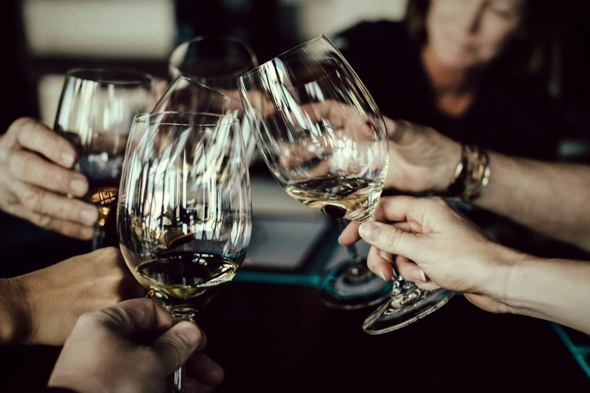
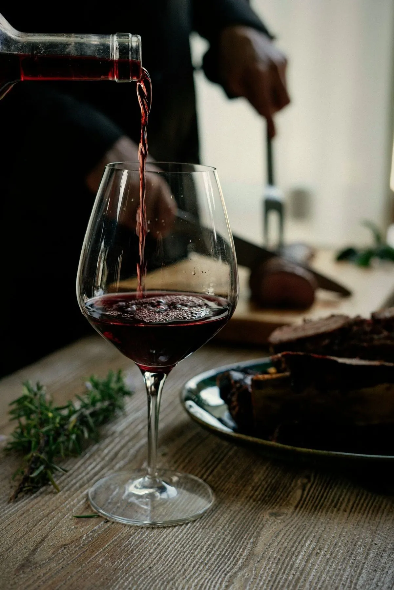

— Our story —
We want to bring the wine scene of Slavonski Brod to life.
The idea was born at gatherings where the conversation always turned to wine. After two months of planning, the founding assembly of BrodWine was held in May 2024, supported by representatives of the county, the chambers of commerce and crafts, and local wineries.
Our mission is to promote wine culture and to bring knowledge and the finest Croatian and international winemakers within reach of our members and the people of Slavonski Brod and Brod-Posavina County – through talks, workshops, tastings and events.
I
Selected wineries
We host winemakers from Croatia, the region and the world – and their stories.
II
Led by sommeliers
Every evening is led by a sommelier who explains wine clearly and accessibly.
III
Limited seats
Smaller groups mean more conversation and a better experience.
IV
Wine without pretension
Connoisseurs and newcomers to the world of wine are equally welcome.
The people behind BrodWine
[PORTRAIT]
President
Dario Pilipović
[PORTRAIT]
Vice-president
Dino Klem
[PORTRAIT]
Secretary
Ante Gojević
[PORTRAIT]
Sommelier
Anto Prgomet
2nd place, 28th Croatian Sommelier Championship (2025)
[PORTRAIT]
Sommelier
Dalibor Velički